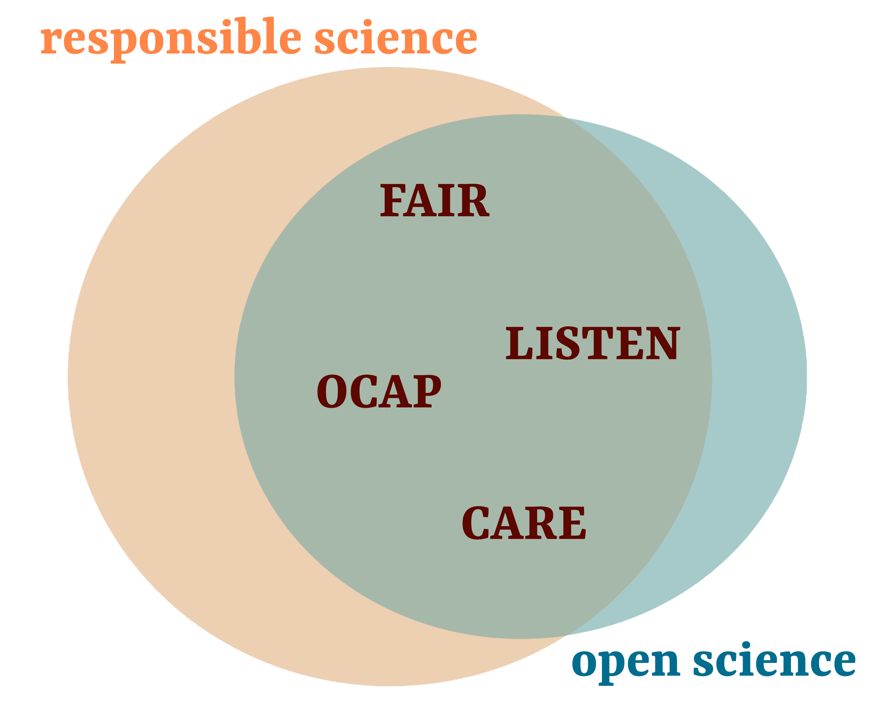
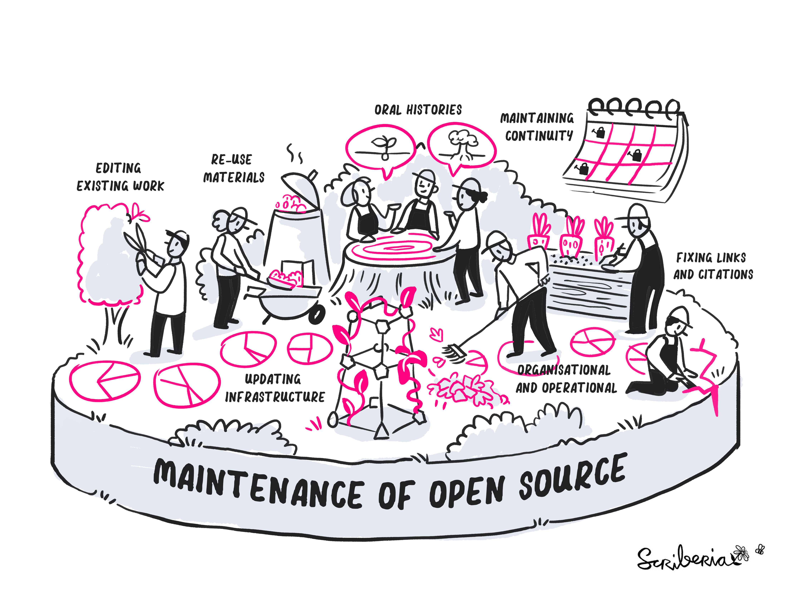

Open Scholarship at SFU
Open Scholarship Initiative Community Manager
Director of Operations at the Institute for Neuroscience and Neurotechnology and leader of the Open Scholarship Initiative
Director, INN
What is the Open Scholarship Initiative?
SFU Open Science and Open Scholarship Principles
People front and center
Respect and acknowledge nuance
Connect and decentralize
Institutional support
https://www.sfu.ca/research/performance-excellence/open-science/open-science-principles.html
The open movement
Share decision making
Share content
Invite participation
The open movement in scholarship practices
Responsible researchers…
Strive for excellence and take responsibility.
Respect the law, research ethics, and professional standards.
Support a culture of transparency, openness, and honesty towards other researchers and the public.
Maximise public benefit and avoid resource waste.
The open movement in scholarship practices
As open as possible, as closed as necessary.
Open scholarship and funding agencies
Canadian federal funding agencies are decreasing their focus on pay-for-publishing OA publications and datasets.1
FAIR data can save up to 9% of a project’s costs 2
“The annual cost of not making data FAIR in Europe is a minimum of €10.2bn per year.” 2
Ways to open

Pillars of Open Science, UNESCO (2021)
How can we support each other?
The Turing Way Community, & Scriberia. (2023). Illustrations from The Turing Way: Shared under CC-BY 4.0 for reuse. Zenodo. https://doi.org/10.5281/zenodo.7587336
The Open Scholarship Initiative aims to empower, connect and decentralize open scholarship practices and services accross Faculties.
How can we support each other?
Use an affiliated university email address when submitting your paper.
How can we support each other?
Training and technical support
There are many training opportunities at SFU, and the Library has specialized people ready to take on some of your workload with data sharing, data management, open access publishing, and more.
How can we support each other?
Let us connect you with services acrross SFU that can support your Open Scholarship journey.
How can we support each other?
Impact of GenAI on Open Scholarship:
It’s on our radar!
How can we engage your community to take advantage of Open Scholarship?
How can we support your community to achieve academic excellence?
Join us!
Contact us at open_sci@sfu.ca, gracielle_higino@sfu.ca and kelly_shen@sfu.ca
Sign up to our newsletter
Re-use, remix and share the SFU Open Scholarship principles